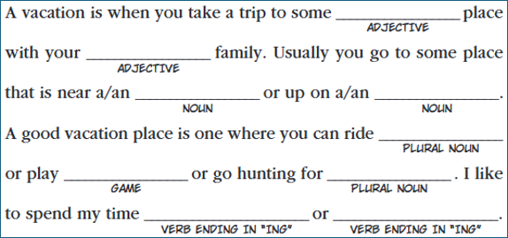
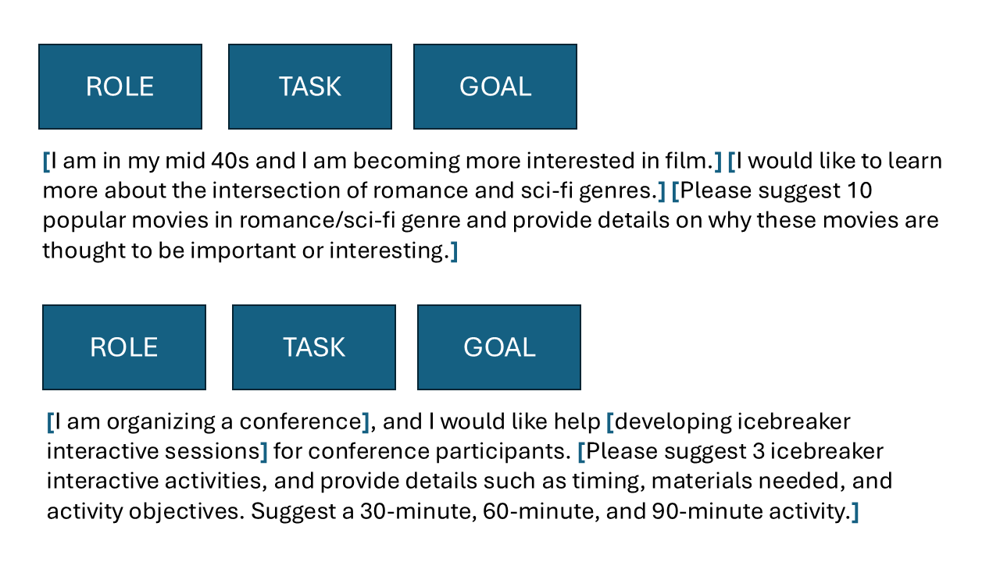
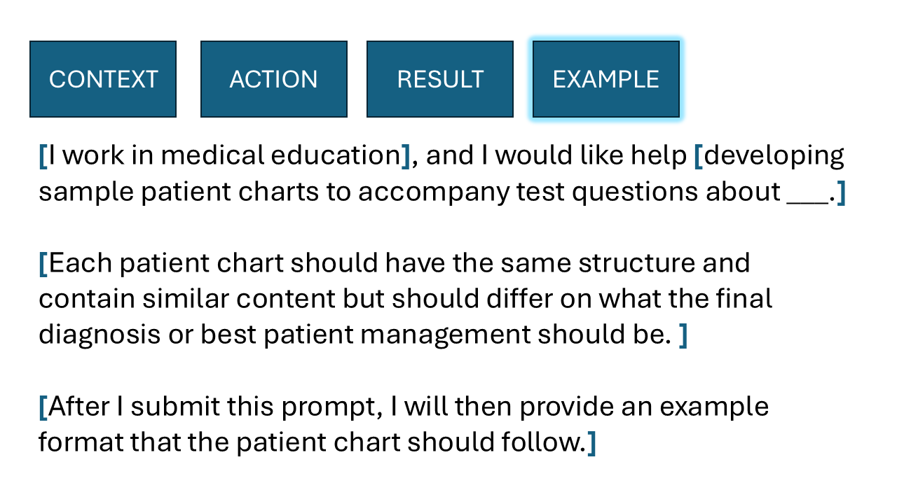

Code
source('downloads/claude_plus.R')
silly_test <- claude_plus("Generate an assessment question for science test.")We’ll only cover a sampling of these methods in the workshop today because we’ll be focusing more on their application than extensively testing different prompting strategies, but I encourage you to further explore these techniques based on your specific use case.
Tie in to chapter 1
I think it’s helpful to think of building a prompt like filling in missing blanks in Mad Libs.

A well-crafted prompt includes instructions that touch upon all the most important blanks to be filled in. Any detail that you don’t explicity specify in a prompt will be inferred by the model when generating its response - usually picking the most common token to fill in that blank.
An obvious example can be helpful here.
source('downloads/claude_plus.R')
silly_test <- claude_plus("Generate an assessment question for science test.")Science Assessment Question
Grade Level: Middle School (6-8)**
Topic: States of Matter**
Question:
A student leaves a glass of ice water on a table in a warm room. After 30 minutes, they observe that: - The ice cubes have disappeared - There is liquid water in the glass - Water droplets have formed on the outside of the glass
Part A (3 points): Explain what happened to the ice cubes and identify the change of state that occurred.**
Part B (3 points): Explain why water droplets formed on the outside of the glass, even though the water was on the inside.**
Part C (4 points): Describe the movement and arrangement of water molecules in:** 1. The ice (before melting) 2. The liquid water (after melting)
Answer Key:
Part A: The ice cubes melted and changed from solid to liquid. This is called melting or fusion.**
Part B: Water vapor in the warm air touched the cold glass surface, cooled down, and condensed into liquid water droplets on the outside.**
Part C: ** 1. Ice: molecules are tightly packed in a fixed arrangement and vibrate in place 2. Liquid water: molecules are close together but can move and slide past each other
As you can see, the model had to make some choices (via probability sampling) about the assessment item that we didn’t specify:
Although this example was extreme, it demonstrates the point well. We didn’t precisely tell the model what we wanted, so what did we expect? If we had different expections for the output than what the model provided, we need to make that clear in our prompt.
Vague prompts aren’t inherently bad. They’re quite useful when you’re brainstorming and want ideas about a topic that are different than ideas you’ve already considered. Even asking the model to develop novel solutions can be helpful in these instances; when a model needs to predict the next token and they don’t have the appropriate content, they usually predict the next token that is most common in the training data given similar contexts.
In my experience, most posts online about effectively using AI models give examples of wording or a way to structure your prompt that helps decrease the number of madlib blanks that need to be filled in. The latter are prompt formulas, which provide a template that helps you fill in key details, essentially reducing the ambiguity in your prompt and guiding the model toward the kind of output you want.
Here’s what a prompt formula looks like — it’s a high-level structure that helps you think through key components when writing a prompt.

I’ve broken down a sample prompt using this structure:
(Example inspired by this awesome Criterion Collection list on Interdimensional Romance)
The second example follows the same structure but focuses on planning icebreaker activities for a conference. An alternative phrasing might be:
“You are an expert in developing interactive icebreaker sessions for conferences. Generate a session for 30-, 60-, and 90-minute formats, including timing and materials needed for each.”1
As you can see, many details are still left out—like whether materials should be required, the topic of the conference, or the types of attendees. But by using a prompt formula, you’re reminded to include these kinds of details to get more targeted and useful output.
Here’s another example:

Like the previous one, it includes context, action, and result, but with a powerful addition: you provide the LLM with an example of the output you want. In this case, the context is medical education, the action is to develop sample patient charts, and the desired result is a set of charts with similar structure but different diagnoses. By including a sample chart, you’re giving the model a clear template to follow. It’s essentially being asked to “fill in the blanks” based on the example and the other information you’ve provided. This approach gives the model more guidance for the desired output, especially when the structure or format of the output is important.
Providing a completed example is extremely powerful for two key reasons:
This double duty of providing guidance on both structure and substance is what makes examples such a valuable part of prompt engineering.
It can be helpful to explicitly structure your prompts within the prompt formula you’re using. Using punctuation or formatting to separate the components can make each part clearer to the model.
While you could write the prompt above as paragraph, doing so requires the model to spend some of its attention deciphering how the sentences relate to one another and what it should be doing. By using a more structured format you allow the model to focus more on the content and the output, rather than on parsing the prompt itself. This kind of formatting acts as a signal, helping the model better understand your intent and produce more accurate results.
Prompt chaining is the process of sequencing prompts together to complete more complex tasks. Prompt chaining is effective because it mirrors how humans tackle complex reasoning—by breaking problems into smaller, sequential steps that build on one another. Early generations of language models required explicit guidance to do this well. Users learned to include instructions like “think through this step-by-step” or “show your reasoning before answering” to encourage a structured, multi-stage thought process known as chain-of-thought prompting. This approach improved accuracy because it forced the model to generate a longer sequence of tokens that adhered to what an explanation would look like instead of just predicting the final output. Even with newer models this approach - asking for rationales or other details in addition to your desired output - has been shown to be beneficial.
Newer reasoning models and research modes have internalized much of this behavior through invisible instructions.
These are system prompts or additional instructions that aren’t shown to the user but are built into the system to help guide the model’s behavior and improve the quality of its responses.
These instructions are always present in some form. Before generating a response, the model applies internal rules to review your input and shape its output. For example, it reviews inputs and output to check for content that might infringe on intellectual property, is plagiarized, or includes harmful or illegal material. (While companies have heavily invested in these safeguards, they’re not guaranteed. It’s still your responsibility to verify that the output is appropriate and doesn’t violate any guidelines.)
Invisible instructions also influence the style and personality of the model’s responses. You might have noticed that a model may suggest next steps or follow-up actions, even if you didn’t explicitly ask for them. That’s part of the invisible instructions, designed to extend your engagement with the chatbot.
Let’s look at a sophisticated example from Anthropic’s “Research” mode:

While this also touches on multi-agentic systems, which we’ll briefly discuss later, the main point is that there are a lot of other instructions that happen behinds the scenes that are invisible to the user. In Anthropic’s research mode, the user submits a prompt. Through hidden instructions, a “lead researcher” prompt is generated. This agent then creates and directs additional prompts. These prompts spawn sub-agents, each focused on a narrow aspect of the research topic. The number of sub-agents is determined by the output of the lead researcher prompt. Each sub-agent investigates its assigned topic and may also search the web for supporting information. The sources accessed are saved in an index. Once all sub-agents complete their tasks, another agent reviews and synthesizes the information into a coherent narrative, including citations where appropriate. After all these steps, the final output is returned to the user.
You can design your own workflow of chained prompts that mirror many of the ways that reasoning model and research modes operate. One benefit of building your own chained workflow is that nothing is hidden - you know how the process has been designed and you have control at each step. I won’t go into much detail here because we’ll cover this in more depth later (including an activity), but I want to mention it here for completeness while discussing effective prompt engineering strategies.
In summary, chaining makes the reasoning process visible and, in a sense, auditable.2 It allows educators and measurement professionals to preserve the interpretability of each decision stage, ensuring that LLM-driven analyses remain explainable, trustworthy, and aligned with established principles of evidence-based assessment.
Many people have pointed out that a 90-minute ice breaker session would be terrifying.↩︎
I would argue that the process of generating the response isn’t really “thinking” in the sense that you and I know the word. Anthropic has published research showing that models don’t always say what they’re actually thinking when providing a response that “shows” their reasoning.↩︎